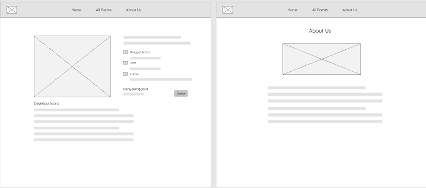
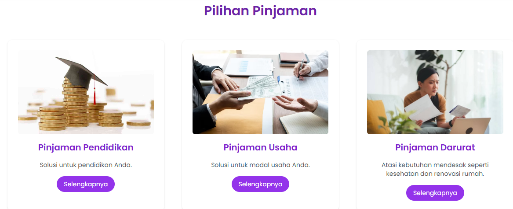
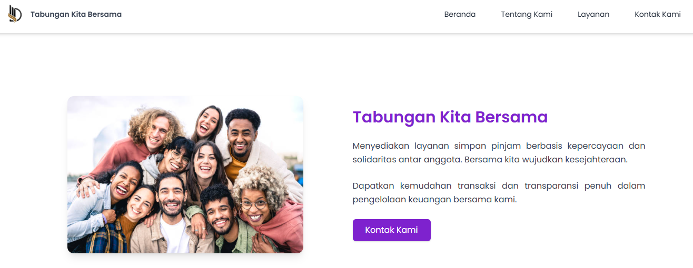
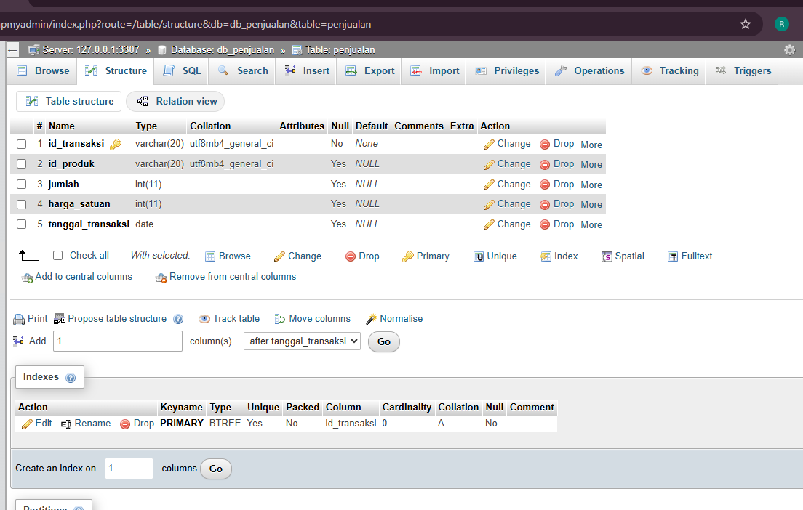

Tabungan Kita Bersama

This project is a fully custom-built cooperative website called "Tabungan Kita Bersama", designed to support digital savings and loan services. The entire development process was handled end-to-end, starting from user interface conceptualization to full backend integration.
Key technologies used include HTML, Tailwind CSS, and JavaScript for the responsive frontend, while the backend logic and storage were developed using PHP and MySQL.
Initial Wireframe Design
The development process began by designing the structural layout of the website, including navigation flow, placement of visual components, and basic content hierarchy.
Visual Design Creation
After the wireframe was completed, a polished visual design was created, incorporating color themes, typography, icons, and UI elements.
Frontend Development
The responsive interface was developed using HTML, Tailwind CSS, and JavaScript. This stage focused on ensuring smooth functionality across all devices while maintaining a clean modern layout.
Backend Integration
Backend functionalities were implemented using PHP to handle form submissions, data validation, processing logic, and secure transactions between the user and the database.
Conclusion
The development of the Tabungan Kita Bersama website represents a complete end-to-end digital project — starting from wireframing, UI/UX design, frontend development, to backend integration using PHP and MySQL. This system now supports digital savings and loan services with a responsive interface, modern design, and reliable data processing. Overall, this project demonstrates a full workflow in building a professional and functional web application from concept to execution.